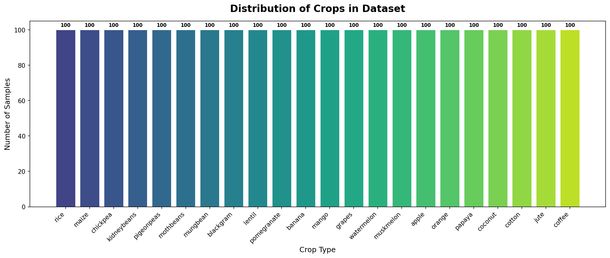
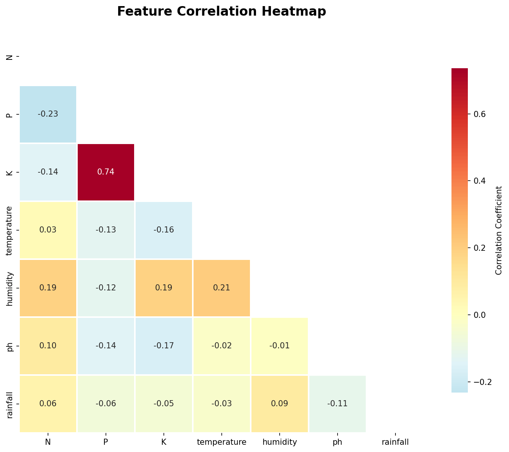
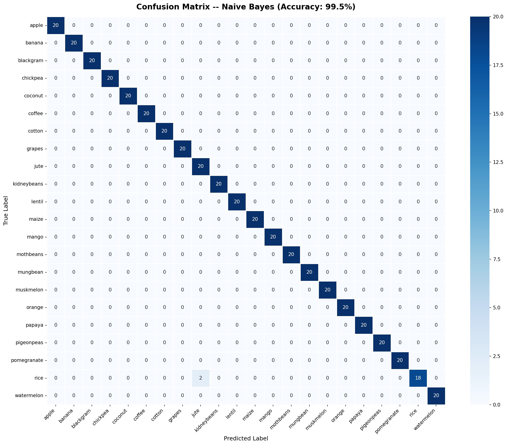
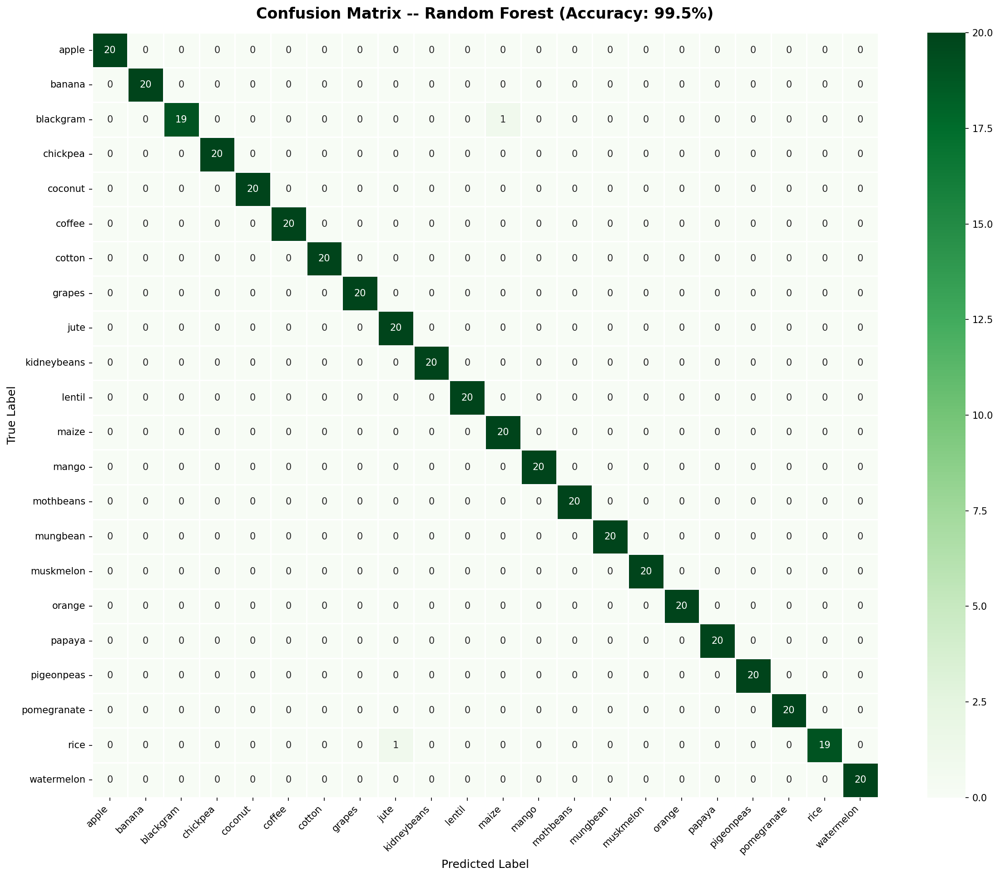

Data-Driven Crop Recommendation Model
Replacing intuition with quantifiable precision.
Traditional agricultural planning relies heavily on historical intuition and guesswork. This qualitative approach often leads to suboptimal resource allocation, poor yields, and inability to dynamically adapt to shifting climate and soil conditions.
We developed a robust classification model that accepts continuous numerical inputs (Nitrogen, Phosphorus, Potassium, Temp, Humidity, pH, Rainfall) and outputs a precise, discrete categorical variable: the statistically optimal crop.
Kaggle Crop Recommendation Dataset details.
{
"N": 90,
"P": 42,
"K": 43,
"temperature": 20.87,
"humidity": 82.00,
"ph": 6.50,
"rainfall": 202.93,
"label": "rice"
}
Target Class Distribution

The dataset is perfectly balanced with exactly 100 samples per crop, negating the need for SMOTE or class re-weighting.
Feature Correlation Matrix

Heatmap reveals minimal high-correlation between features, confirming the absence of multicollinearity issues.
Methodological sequence of events.
Extracted raw CSV into Pandas DataFrames for matrix manipulation.
LabelEncoder maps target strings to integers. StandardScaler normalizes feature inputs.
80/20 train/test division preserving the identical class proportion in both subsets.
Execution of Gaussian Naive Bayes and Random Forest architectures.
GridSearchCV execution traversing parameter permutations using 5-Fold Cross Validation.
Exporting tuned model, Scaler, and Encoder as .joblib binaries for prod API loading.
Comparing baseline vs tuned ensemble performance.
| Architecture | Methodology | Complexity Validation | Test Accuracy |
|---|---|---|---|
| Gaussian Naive Bayes | Probabilistic Baseline | Static / Fast Inference | 99.55% |
| Random Forest (Deployed) | Decision Tree Ensemble | GridSearchCV (144 Params × 5 Folds) | 99.55% |
Why Random Forest? Although Naive Bayes matched the accuracy metric, Random Forest provides superior robustness to outliers and does not assume normal distribution of agricultural data. It is inherently more reliable for non-linear real-world environmental bounds.
Tracking True Positives vs False Negatives mapping.


A decoupled, microservice-style operational flow.
The trained Random Forest model acts as a standalone inference engine. It takes in soil parameters via a secure REST API, computes the probabilities, and returns a clean recommendation. Hosted completely independently of the physical UI.
A fast, accessible React interface allowing farmers or agricultural planners to input data without needing to understand the underlying Python algorithms. It communicates with the Flask server seamlessly, maintaining a strict separation of concerns.
Beyond the bootcamp: Real-world applicability.
Moving away from risky intuition-based farming. This model enables precise matching of local soil samples to optimal crops, acting as an instant digital consultant for traditional farmers to maximize yield and minimize waste.
Currently, temperature and rainfall are manual inputs. Version 2.0 would integrate external interfaces (like OpenWeatherMap) to fetch real-time climate data automatically based on the farm's GPS coordinates.
The Kaggle dataset acts as an excellent foundational structure. In the future, training the model explicitly on East African soil samples and native crops (Sesame, Sorghum, Bananas, etc) will truly localize its recommendation power.